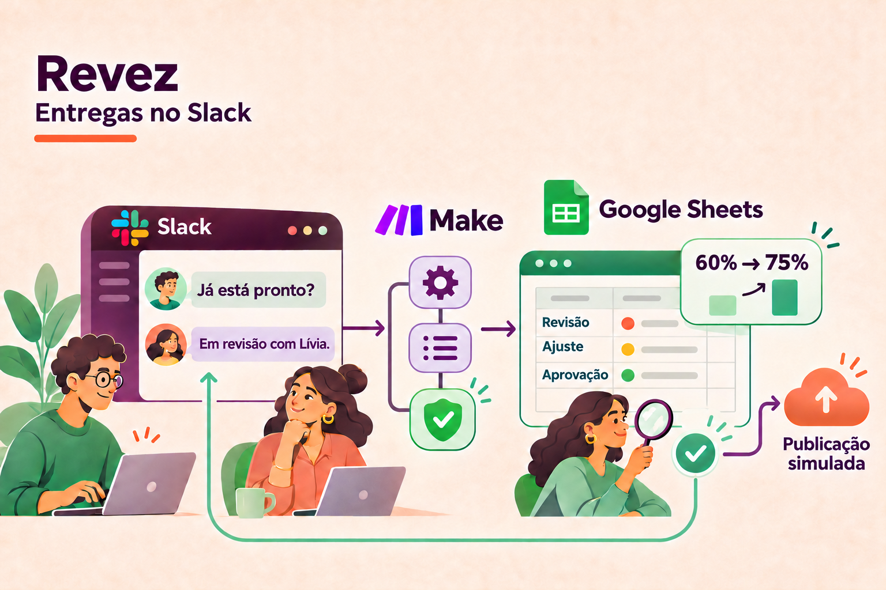

Logistics
Copiloto de Entregas
Painel de pontualidade com dados históricos da Olist. O chat consulta o recorte ativo do painel e vincula as respostas aos pedidos correspondentes.
- Next.js
- TypeScript
- OpenAI API
- Vercel

Antonio Sergio Jr.
AI Resident at SiDi | Databricks & Claude Certified Associate | Analytics & AI
Logistics
Painel de pontualidade com dados históricos da Olist. O chat consulta o recorte ativo do painel e vincula as respostas aos pedidos correspondentes.
Collaboration
Automação de entregas no Slack. O fluxo concentra consultas, revisão, pedidos de ajuste e aprovação, com a próxima ação e a versão vinculadas à tarefa.
Ver fluxo no Slack
Data Science
Pipeline de machine learning para estimar o risco de alertas críticos em frota de mineração em uma janela de até quatro horas. Projeto premiado no Programa Desenvolver 2026 da Vale.
Ver projeto premiado
API Contracts
Análise de impacto de mudanças em contratos de API. O caso Stripe compara versões do contrato e mapeia campos alterados, consumidores simulados e evidências de dependência.
Abrir caso StripeJob Search Automation
Automação que coleta vagas públicas, extrai os requisitos de cada trilha e envia um resumo por e-mail, com controle de duplicatas.
Ver funcionamento
Data Science
Fluxo de exploração de dados em que o código Python gera o gráfico para o notebook e uma descrição textual dos mesmos dados para o Claude.
Ver fluxo de análise
Analytics Engineering & BI
Indicadores de primeira resposta e resolução para avaliar se prestadores terceirizados cumprem os prazos contratuais, inclusive nos chamados urgentes.
Ver painel e detalhesData Engineering
Teste técnico que levou à aprovação na turma 2026.5 do programa de trainee Lighthouse da Indicium. O pipeline integra vendas e câmbio PTAX em camadas Bronze, Silver e Gold para analisar a rentabilidade.
Ver repositórioData Science
Comparação de modelos de churn com validação cruzada, explicação por SHAP e simulação de retorno financeiro.
Ver repositórioData Science
Análise de varejo com segmentação RFM, sazonalidade e investigação de anomalias financeiras.
Ver repositórioMLOps
Comparação de três modelos de sentimento com métricas registradas no MLflow e predições em lote por API.
Ver repositórioComputer Vision
Aplicação que processa vídeos e extrai indicadores de varejo, como fluxo de pessoas e ocupação.
Ver repositórioNLP
Chatbot com classificação de intenções, reconhecimento de entidades, busca em FAQ e análise de sentimento.
Ver repositório